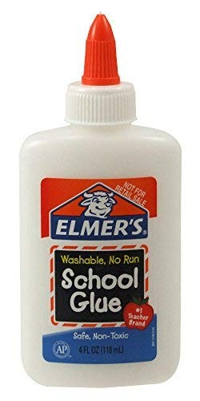

parroting a broken record held together by elmer's glue
the staple of every USian classroom, only good for cruddy papier-mâché, and nothing more:

(context if you don't know what elmer's glue is)
i'm no stranger to writing long posts™ on the internet - and yet, spelling out my thoughts sans parsing via instagram stories and tweets remains a daunting task. i feel ridiculous for not being able to drop my social anxiety in a space supposedly curated for me and me only, but you know what they say about old habits.
maybe with time, i might see that change.
in short: i don't really know who to include in those circles anymore, and keeping all of this to myself in my actual journal feels... inadequate. none of the previous channels i've tried were cathartic enough for my autistic social needs - spacehey is a close contender, though. i'm doing this all on a whim, crossing my fingers that i'll connect with the right people by putting stuff wherever i'm more likely to find them.
why posting my thoughts on private accounts doesn't cut it for me (1 paragraph)
anyways, i'm not sure what to say in this post that hasn't already been said an uncountable number of times across the indie web (very much past the point of becoming a tired cliche). i just hope that i'll be able to make the most out of what i've already crafted - knowing how much effort i've put forth up until this point, it would be a waste not to.